La percezione architettonica non coincide con il riconoscimento degli oggetti. Dove l’occhio abitualmente vede porte, finestre e arredi, lo sguardo progettuale individua tensioni, assi, ritmi, direzioni, vuoti e pieni. L’architetto allena la visione a cogliere strutture relazionali, non funzioni o usi. Le immagini selezionate rendono visibile il passaggio dalla lettura convenzionale dello spazio alla sua comprensione percettiva e costruttiva.
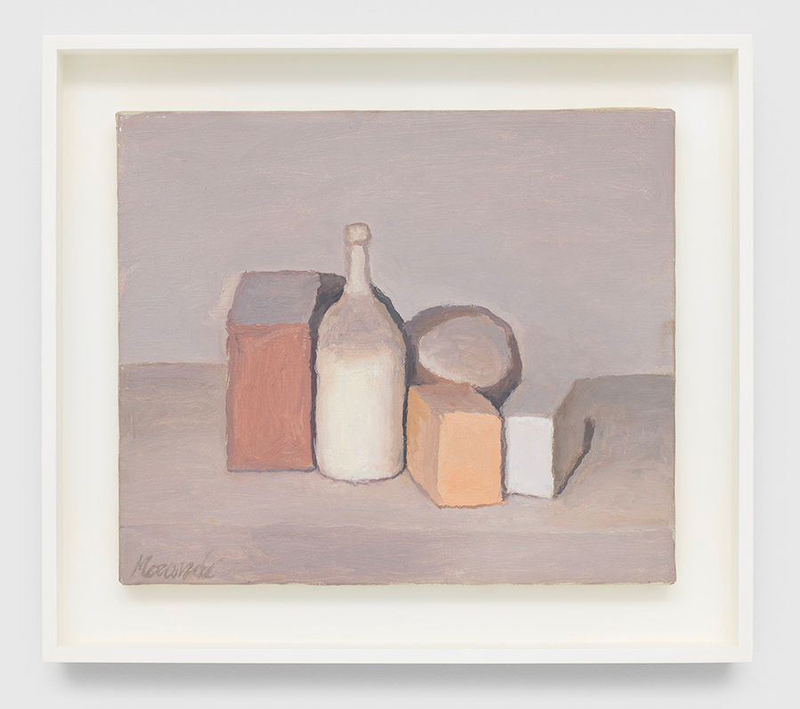
La Natura morta (Still Life) di Giorgio Morandi del 1955 è un’opera realizzata con la tecnica dell’olio su tela e si trova in una collezione privata. Morandi era noto per la sua dedizione ossessiva a un numero limitato di soggetti, principalmente bottiglie, vasi e oggetti domestici, che trasformava in composizioni senza tempo. Le sue opere del dopoguerra, come questa del 1955, sono caratterizzate da:
B.
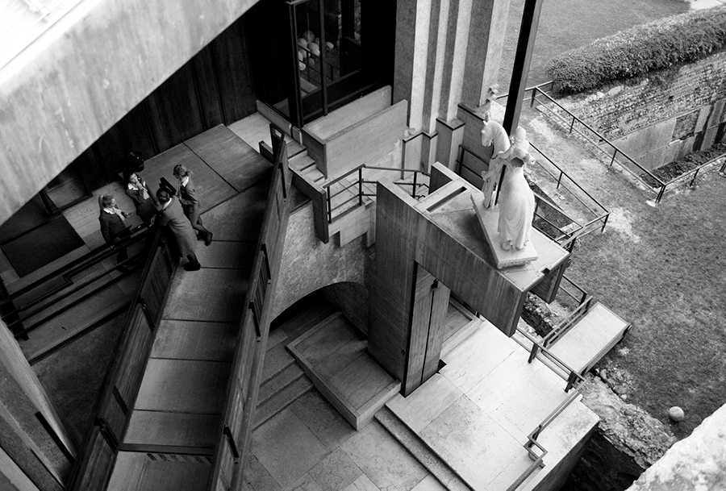
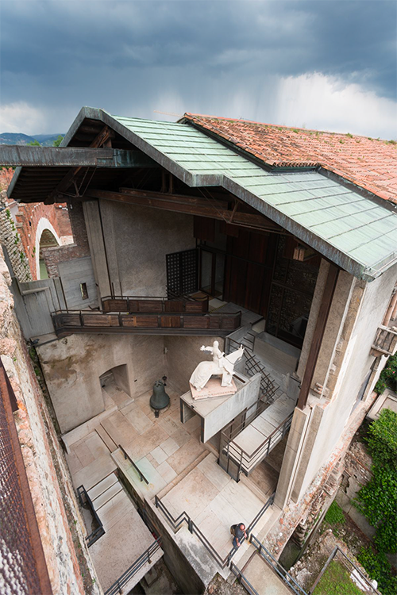
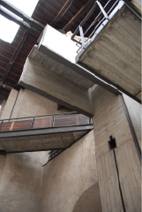
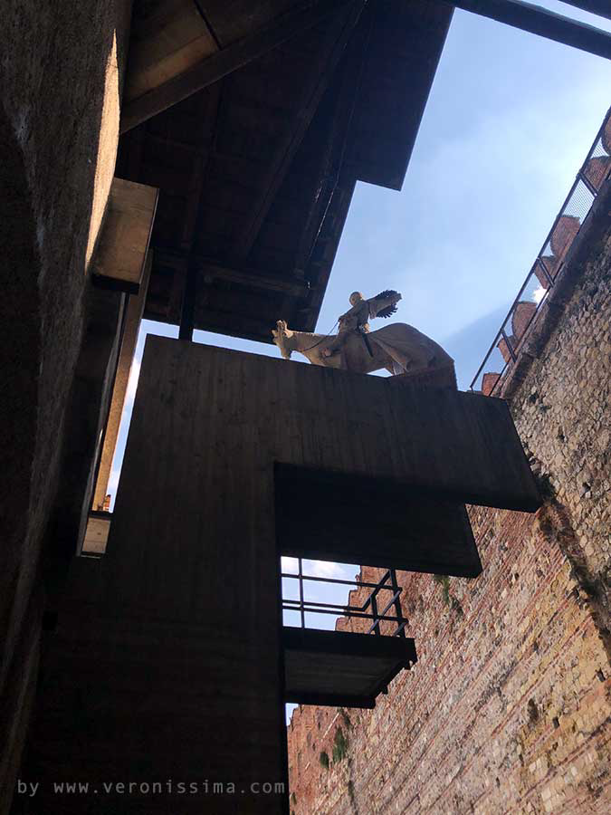
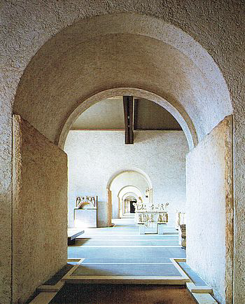
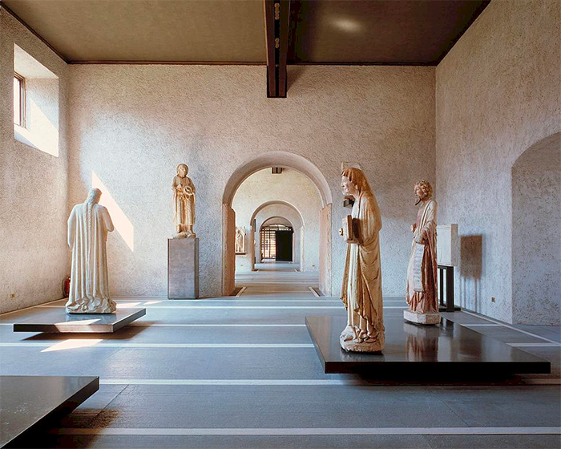
C.
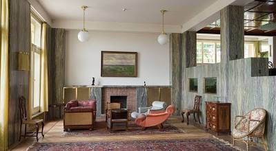
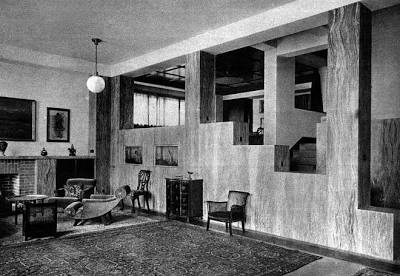
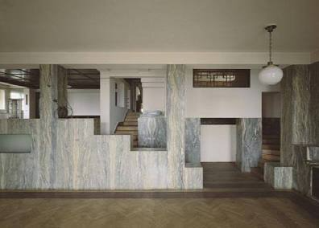
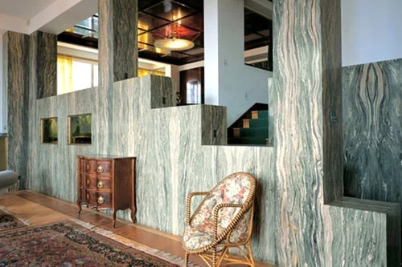
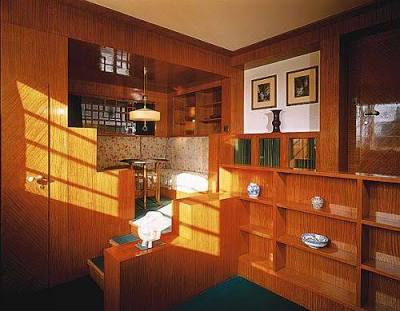
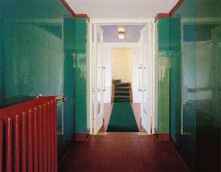
D.
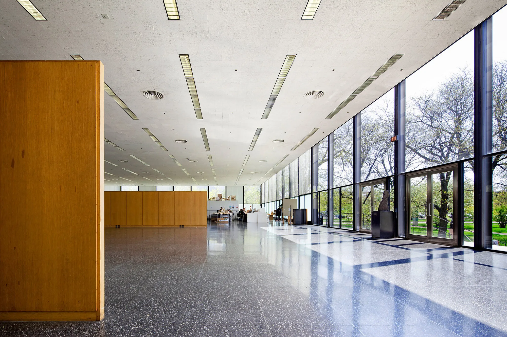
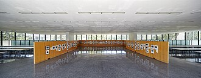
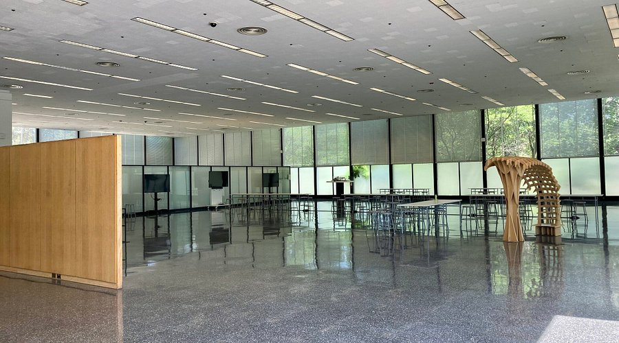
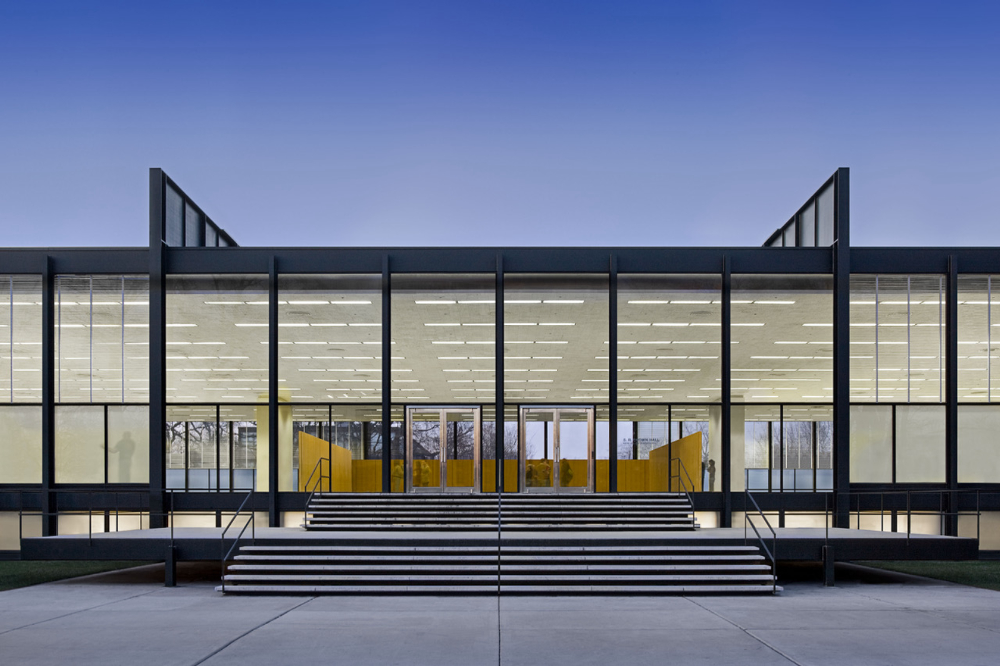
Crown Hall, situata a Chicago, Illinois, è ampiamente considerata il capolavoro architettonico di Ludwig Mies van der Rohe e un'icona del Modernismo del XX secolo. È la sede del College of Architecture dell'Illinois Institute of Technology (IIT) ed è un monumento storico nazionale degli Stati Uniti.
Caratteristiche architettoniche principali
Storia e significato
Mies Crown Hall Americas Prize (MCHAP): l'edificio è l'omonimo e ospita il MCHAP, un prestigioso premio biennale che riconosce l'eccellenza architettonica nelle Americhe.